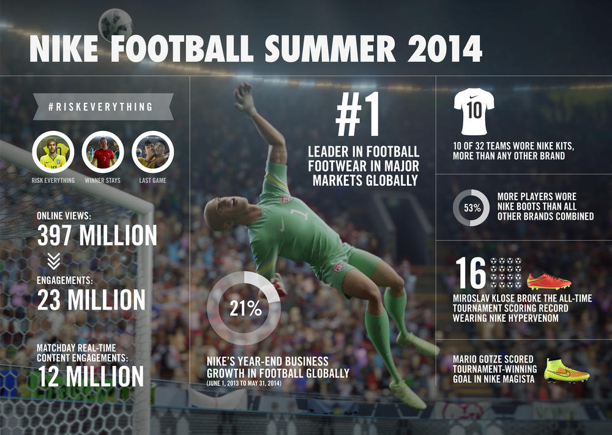

Products
Success
With one strike of his Nike Magista boot, German striker Mario Gotze sent his nation into raptures and sealed his place in football history. For Nike Football, the moment capped an exciting year for both the brand and business. On the pitch, Nike started the tournament with 10 sponsored teams, while 53 percent of all players selected for their squads wore Nike boots, more than for all other brands combined. Throughout the competition, Nike-sponsored players scored 76 goals, including the winner in the final from German striker Mario Gotze, and the goal that took his fellow striker Miroslav Klose to all-time tournament goalscorer, breaking the cumulative record previously held by Ronaldo of Brasil. Off the pitch, the #RiskEverything campaign dominated views, social chatter and engagement leading up to and during the tournament. The three #RiskEverything films, “Risk Everything,” “Winner Stays” and “The Last Game”, have racked up 397 million online views to date. Twenty-three million people engaged with the content by liking, retweeting or commenting, making “The Last Game” one of Facebook's most shared posts ever. Nike extended the campaign by creating real-time animations, such as the #AskZlatan digital shorts. The animated Zlatan Ibrahimovic commented on Nike's teams and players through short videos posted on social media and through media partnerships, resulting in 20.6 million online views and 12 million consumer engagements. As a result, Nike Football gained 6.2 million new followers during this time across different social platforms, around 1.5 million per week throughout the tournament. This brings the cumulative total of Nike Football's social channels to 78.8 million followers. These numbers show an unprecedented level of engagement with the brand. Alongside 21 percent growth in Nike Football’s business over the fiscal year leading up to the tournament (June 1, 2013 - May 31, 2014) , the figures demonstrate why Nike is the sport’s leading brand globally. Nike Football continues its momentum with the launch of the Nike Football app. The app allows members of the Nike Football community to be the first to access the latest products, stories and event experiences, boasting interactive features, such as easily organizing pick-up games with friends. Even after the final whistle, the beautiful game continues, on streets, courts and pitches across the globe.